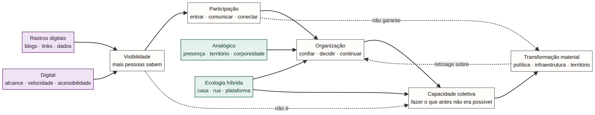

TrumpBlogs
O índice público consultado continha 7.673 blogs. As contagens de várias categorias coincidiram com os arquivos disponíveis.
Uma síntese de duas investigações: as ferramentas DataRepublican e uma matriz para compreender como infraestruturas digitais e práticas presenciais transformam — ou não — participação em capacidade coletiva.
O novo estudo não é uma defesa do analógico nem uma rejeição da tecnologia. Ele questiona o que acontece quando plataformas digitais deixam de ser ferramentas entre outras e passam a funcionar como principal lente para compreender a vida social, os conflitos e a política.
A pergunta que orienta esta página é: o que o predomínio do digital torna visível, o que torna possível e o que deixa fora do campo de visão?
O estudo anterior examinou as ferramentas públicas da DataRepublican, especialmente TrumpBlogs, anteriormente chamado NoBlogs, e o DSA Explorer. Essas ferramentas agregam dados públicos, organizam registros, aplicam classificações e apresentam relações por meio de mapas, grafos e interfaces de busca.
O índice público consultado continha 7.673 blogs. As contagens de várias categorias coincidiram com os arquivos disponíveis.
Os arquivos públicos indicavam 512 nós e 1.059 relações. O conjunto distinguia relações marcadas como confirmadas e inferidas.
O anexo mencionava cerca de 4.620 blogs mapeados e 2.413 arestas; os arquivos atuais consultados indicavam 4.787 registros com coordenadas e 883 arestas.
O resultado da pesquisa anterior foi calibrado: as ferramentas existem e podem ser úteis para descoberta de relações, mas não constituem prova independente das classificações, da relevância dos atores ou de sua capacidade política.
Aplicada ao caso DataRepublican, a matriz digital-analógica mostra que o objeto observado não é simplesmente “a sociedade”. É a sociedade depois de passar por filtros de disponibilidade pública, rastreabilidade digital, seleção de fontes, taxonomia e visualização.
Quem aparece porque possui blogs, links, documentos e rastros pesquisáveis?
Quais grupos atuam por relações territoriais, presenciais ou informais e deixam menos rastros?
Uma conexão documentada produziu confiança, continuidade, coordenação ou mudança material?
A nova metodologia propõe inverter a ordem da pesquisa. Em vez de começar pelas plataformas, começa-se pelo que está acontecendo concretamente na vida das pessoas.

| Nível | O que a DataRepublican ajuda a localizar | O que exige outra pesquisa |
|---|---|---|
| Vida material | Temas, entidades, projetos e documentos. | Moradia, trabalho, renda, cuidado, violência, território e experiência cotidiana. |
| Conflito | Relações publicadas ou inferidas entre atores. | Quem controla recursos, infraestrutura, legislação e decisões. |
| Organização | Conexões, citações, presença digital e redes. | Confiança, assembleias, divisão de trabalho, continuidade e reprodução. |
| Prática | Blogs, campanhas e produção de informação. | O que grupos fazem juntos fora da representação digital. |
| Efeitos | Descoberta, documentação e circulação de informação. | Mudanças verificáveis em políticas, propriedade, acesso, trabalho ou instituições. |
Localizar documentos, atores, vínculos possíveis, padrões de citação e mudanças nas versões públicas dos dados.
Investigar se uma relação documental corresponde a coordenação, influência, conflito ou apenas proximidade textual.
Demonstrar capacidade coletiva, consentimento, confiança, controle territorial, intenção política ou mudança material.
Pergunta decisiva: o rastro digital corresponde a uma capacidade organizativa real, a uma relação histórica, a uma inferência do pesquisador ou apenas a uma proximidade documental?
Critério político: visibilidade não é poder. Participar mais não significa automaticamente possuir mais capacidade coletiva.
Para testar a hipótese, cada caso mapeado deveria ser acompanhado por pesquisa fora da plataforma:
Esta síntese combina a análise do material fornecido com as verificações realizadas nas páginas e arquivos públicos abaixo. Os números são retratos do snapshot consultado em 25 de setembro de 2026 e podem mudar.
Nota: as classificações dos projetos são apresentadas como interpretações analíticas. A existência de uma fonte no arquivo não equivale, sozinha, a uma auditoria independente da afirmação ou da relação descrita.